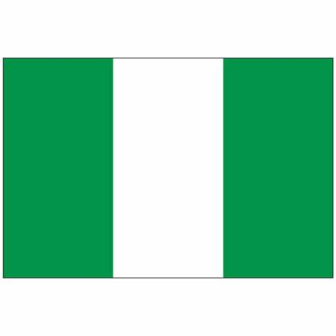

About Me
My name is Ajibola Emmanuel Monday Azagba. I was born in Nigeria and live with my family in Nigeria. I am currently a student of BYU-Idaho studying Software Development. I love to travel, learn new things and listen to music.
Nigeria
Often referred to as ‘the giant of Africa’, The Federal Republic of Nigeria is actually only the tenth-largest country in the continent. Located in the southeast of West Africa, it’s bordered by Benin, Cameroon, Chad and Niger. It’s around four times the size of the UK and twice the size of California, with the river Niger – where it got its name from – coursing through its heart. It’s famous for its booming tech industry and burgeoning arts scene.